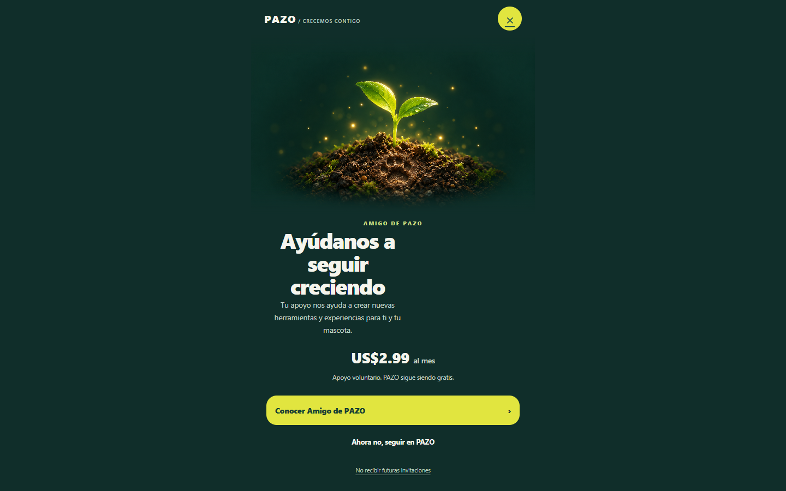
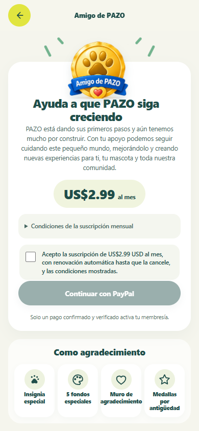
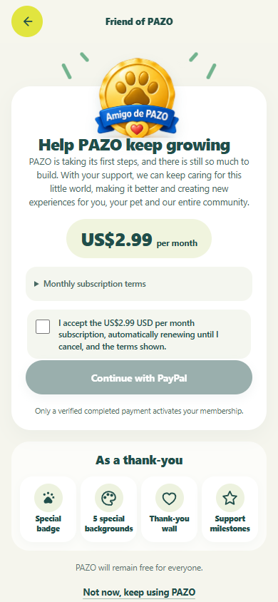
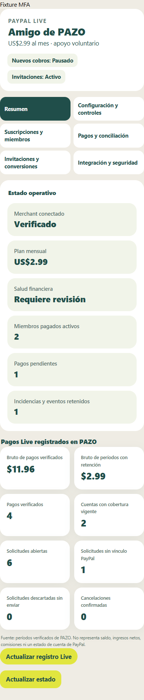
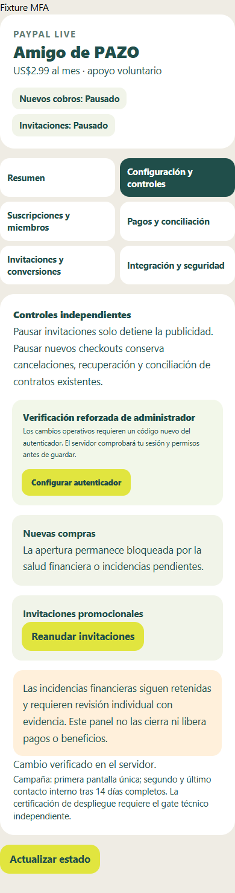
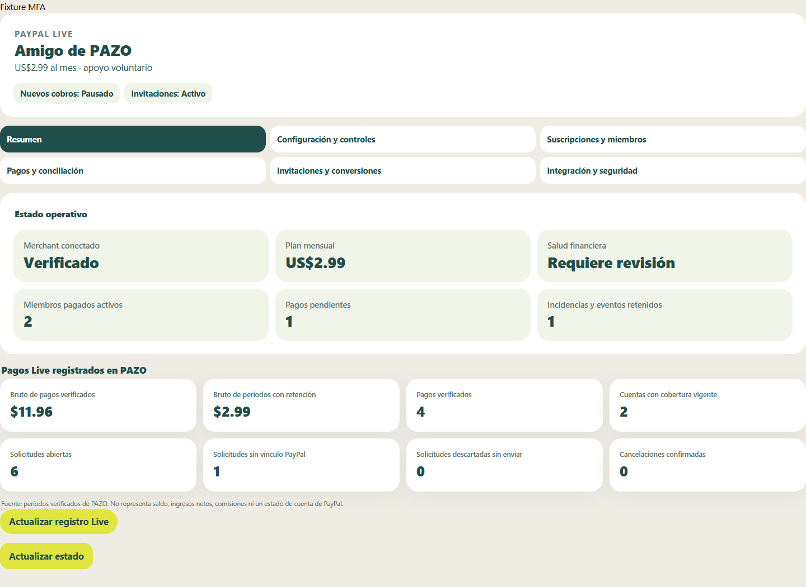

PAZO · Revisión F18PAZO / F18 / REVISIÓN DEL PRODUCT OWNER
Ayúdanos a seguir creciendo
Diseño G, oferta única y administración de Amigo de PAZO. Capturas de la implementación real en laboratorio; los importes y cuentas que aparecen son sintéticos. Esta galería es estática: no inicia sesión, no solicita pagos ni modifica datos.
Una invitación, con una salida clara
Español · 390 × 844. Brote y huella, precio, apoyo voluntario, salida y opt-out.English · 320 × 568. Scroll nativo en pantallas cortas; movimiento reducido respetado.
Escritorio · composición centrada y sin overflow horizontal.
La misma oferta desde cualquier entrada

Español. US$2.99 mensuales, términos y consentimiento antes de PayPal. La pantalla de invitación no inicia un checkout.
English. El servidor verifica la compra; el regreso desde PayPal no concede beneficios.PayPal Live, organizado en seis secciones

Resumen móvil: estado de cobros/publicidad, plan, merchant y salud. Datos de laboratorio.
Pausas independientes, MFA y confirmación explícita. El botón Fixture MFA pertenece únicamente al harness de pruebas.
Resumen de escritorio. Haz clic en cualquier captura para verla a resolución completa. Ninguna cifra representa ventas reales.
Correcciones de revisión · ES / EN
Resumen con palabras completas y controles según el estado del servidor, en cuatro anchos. Las capturas de controles muestran ambas pausas y la apertura bloqueada por una incidencia sintética pendiente. La resolución masiva se retiró. Informe de correcciones y pruebas.